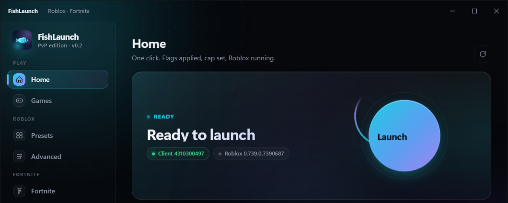
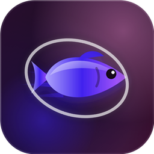

FishLaunch
The launcher your FPS deserves.
One click starts Roblox or Fortnite with your graphics preset, a real FPS cap, the lowest-ping region and your PC tuned — then it keeps itself up to date.

Everything a PvP player wants, nothing else.
Built by a Blox Fruits & Fortnite player who got tired of laggy launchers.
Set 120 / 240 / unlimited with Roblox's own signed setting — the only FPS lever that still works after the FFlag lockdown.
PvP, Balanced, Cinematic — every flag is verified after it's written, so you know what the game actually got.
Measures every Roblox datacenter from your PC and steers you to the lowest ping — with auto-rehop when a server is bad.
Input lag, network, timer resolution, the FishLaunch power plan. Each tweak says what it changes and shows if it stuck.
Custom overlay crosshair, Fortnite launch settings and mods — the same app for both games.
Install once. New versions are signed and arrive on their own — your friends always run the same build as you.

FishBrowser
A fast, dark browser built for gamers: ads and trackers blocked before they load, Roblox's Play button opens straight into FishLaunch, real fullscreen for videos, and the same look as the launcher.
Questions
Windows says "unknown publisher" — is that normal?
Yes. A Microsoft code-signing certificate costs a few hundred dollars a year, which a free app skips. Click More info → Run anyway. The download itself is served by GitHub, and every update is signed with FishLaunch's own key before your copy accepts it.
"Smart App Control blocked an app that might be unsafe" — no Run anyway button?
That is Windows 11's Smart App Control, which only allows apps with a paid publisher certificate. It cannot be bypassed per-app. Turn it off once: Settings → Privacy & security → Windows Security → App & browser control → Smart App Control settings → Off. Windows only lets you turn it back on with a clean reinstall (Microsoft's rule, not ours), and it's usually only on for brand-new Windows 11 PCs.
Can it get me banned?
No. FishLaunch downloads the official Roblox client from Roblox's own servers, writes two config files, and starts the exe. It never reads or touches the game process — there is nothing for the anti-cheat to see. Same for Fortnite / EAC.
How do updates work?
On start, FishLaunch checks GitHub for a newer signed release. If there is one you get an "Update now" banner; it downloads, installs and restarts in a few seconds. Nothing else is ever downloaded in the background.
What does it send anywhere?
Once a day, an anonymous +1 to a public counter so the owner can see how many people use it. No names, no IDs, no IP handling on our side. Accounts live only on your PC.